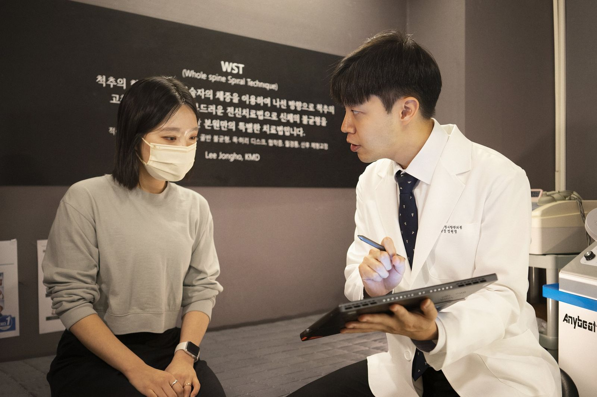

가까운 사람을 떠나보낸 뒤 잠과 입맛이 흔들리는 것은 자연스러운 반응일 수 있지만 오래 이어지면 몸도 지치기 쉬워, 잠과 식사, 일상의 변화를 먼저 묻고 함께 살피며 혼자 견디기 어려울 때 연락할 곳을 안내합니다.
여쭙는 것
- 언제부터 잠과 입맛이 흔들렸나요?
- 하루에 끼니를 몇 번 드시나요?
- 잠은 몇 시간 정도 주무시나요?
생활에서 해 볼 것
- 입맛이 없어도 죽이나 국처럼 부드러운 음식을 조금씩 자주 먹기
- 하루 한 번 밖에 나가 걷기
- 슬픔을 억지로 참지 말고 믿을 만한 사람에게 이야기하기
한의원에서 함께 살필 것
- 상실 뒤 잠이 얕아진 경우 잠의 모양과 마음의 부담을 함께 살핍니다.
- 입맛이 없고 소화가 불편한 경우 식사와 소화를 함께 살핍니다.
- 기운이 없고 몸이 무거운 경우 피로와 생활 리듬을 함께 살핍니다.
먼저 확인이 필요한 신호
- 극단적인 생각이 드는 경우
- 식사를 거의 하지 못해 체중이 크게 줄어드는 경우
- 몇 달이 지나도 일상생활이 거의 어려운 경우
가까운 사람을 떠나보낸 뒤 잠과 입맛이 한동안 돌아오지 않는 것은 자연스러운 반응일 수 있습니다. 다만 몇 달이 지나도 잠이 얕고 끼니를 거의 못 드신다면 몸이 너무 오래 지치지 않도록 함께 살피는 것이 좋습니다. 그래서 언제부터 잠과 입맛이 흔들렸는지, 하루를 어떻게 지내시는지를 먼저 여쭙고, 혼자 견디기 어려울 때 연락할 곳도 함께 알려 드립니다.
왜 이런 불편이 생길 수 있나요
- 큰 슬픔은 몸에도 스트레스로 작용해 잠이 얕아지고 입맛이 떨어지는 경우가 많습니다.
- 떠난 사람이 생각나는 시간, 특히 밤에 잠들기 어렵거나 새벽에 깨기 쉽습니다.
- 끼니를 거르는 날이 이어지면 기운이 떨어지고 몸이 더 무겁게 느껴집니다.
- 슬픔이 오래 이어지며 일상이 거의 어려워진다면 우울로 이어진 것인지 확인이 필요할 수 있습니다.

먼저 이렇게 여쭙니다
- 언제부터 잠과 입맛이 흔들렸나요?
- 하루에 끼니를 몇 번 드시나요?
- 잠은 몇 시간 정도 주무시나요?
- 곁에서 이야기를 나눌 사람이 있나요?
- 체중이 많이 줄었나요?
일상에서 먼저 해 볼 수 있는 것
- 입맛이 없어도 죽이나 국처럼 부드러운 음식을 조금씩 자주 먹기
- 하루 한 번 밖에 나가 걷기
- 슬픔을 억지로 참지 말고 믿을 만한 사람에게 이야기하기
- 같은 처지의 사람들이 모이는 모임이나 상담 찾아보기
- 기일이나 명절처럼 힘든 날은 미리 함께 있을 사람을 정해 두기

한의원에서 함께 살필 수 있는 경우
- 상실 뒤 잠이 얕아진 경우 잠의 모양과 마음의 부담을 함께 살핍니다.
- 입맛이 없고 소화가 불편한 경우 식사와 소화를 함께 살핍니다.
- 기운이 없고 몸이 무거운 경우 피로와 생활 리듬을 함께 살핍니다.
노량진점에서는 먼저 지금의 하루를 서두르지 않고 충분히 듣고, 진맥과 복진 등 필요한 방법으로 몸 상태를 살핍니다. 그다음 잠과 소화를 돕는 생활 요령, 침, 한약 상담 가운데 상태에 맞는 방법을 정하고, 정신건강의학과나 지역 상담 기관이 필요하다고 판단되면 안내합니다. 귀가 전에는 일주일 동안 지켜볼 잠과 식사 기록을 함께 정해 드립니다.
이렇게 기록해 오시면 상담이 쉬워집니다
- 일주일 동안의 잠든 시각, 깬 시각, 깬 횟수
- 하루 끼니와 먹은 양
- 체중 변화(대략이라도)
- 복용 중인 약

이런 증상은 먼저 확인이 필요합니다
- 극단적인 생각이 드는 경우
- 식사를 거의 하지 못해 체중이 크게 줄어드는 경우
- 몇 달이 지나도 일상생활이 거의 어려운 경우
기분이 깊이 가라앉거나 극단적인 생각이 든다면 혼자 견디지 말고 자살예방 상담전화 109나 119, 가까운 정신건강의학과에 바로 도움을 요청하세요. 복용 중인 약은 처방한 의사와 상의 없이 줄이거나 끊지 않습니다.
자주 묻는 질문
슬픈 게 당연한데 진료가 필요한가요?
슬픔 자체는 자연스러운 일이지만, 잠과 식사가 오래 흔들리면 몸도 함께 살피는 것이 좋습니다.
정신건강 상담은 어디서 받나요?
동작구 정신건강복지센터나 정신건강의학과에서 상담받으실 수 있습니다.
가족이 대신 와서 상담해도 되나요?
진료는 본인이 오셔야 하지만, 처음에는 가족과 함께 오시면 이야기를 나누기가 한결 편합니다.
진료 시간은 어떻게 되나요?
좋은꿈참사랑한의원 노량진점은 평일 09:30~20:00(점심 13:00~14:00), 토·일·공휴일 09:30~15:00에 진료합니다.
이 글은 일반적인 건강 정보이며 개인의 진단이나 치료를 대신하지 않습니다. 증상이 있거나 복용 중인 약이 있다면 진료를 통해 확인하세요. 치료 효과는 개인마다 다를 수 있습니다.
좋은꿈참사랑한의원 노량진점은 재진 때 지난번 이야기부터 이어서 여쭙니다. 진료시간과 예약은 오시는 길에서 확인하세요.